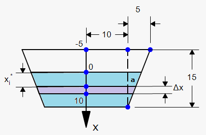

4.Application to the Technology of DAM
A dam has the shape of trapezoid as shown in the figure below.The height of the dam is 20metre and width is 50m at the top and 30m at the bottom.We are to determine the force on the dam due to hydrostatic pressure when the water level is 4m from the top of the dam

We choose a vertical x-axis with origin at the surface of water as shown in the figure.
The depth of water is 16cm,so we divide the interval [0,16]into subintervals of equal lengths with end points xi and xE[Xi-1,xi].
The ith horizontal strip of the dam is approximately a rectangle with height Δ x and width ωi.Now from similar triangles[see fig.(b)above]
a/16-Xi=10/20 i.e.,a=8-xi
and so ωi=2 (15+a) =46-xi
If Ai be the area of the ith strip,then
Ai= ωi Δ x = (46-Xi)Δ x
If Δ x is small,then the pressure pi on the ith strip is almost constant,and
Pi =pgd=1000g xi
The force fidue to hydrostatic pressure is given by
fi =Force x area= PiAi =1000g xi(46-Xi)Δ
Adding the forces and taking the limit as n → ∞
F=limn→∞=∑i=ln1000g x}i(46-Xi)Δ x
=∫0161000g x (46-x)dx
=1000 x 9.8[23x2-X3/3]160
=4.43 x 107 Newton.